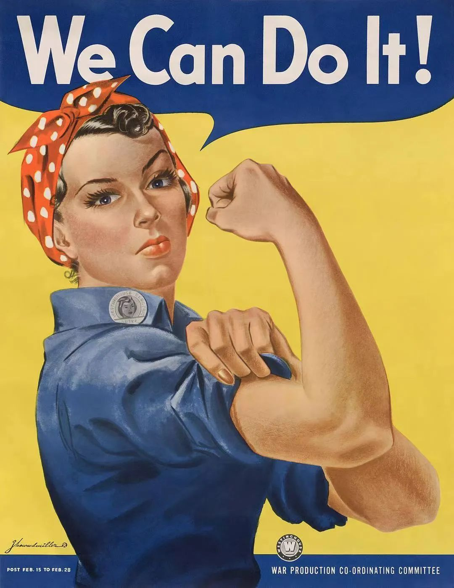

预计阅读时间：5分钟
01
只强调反抗，不谈论权利，可乎？
昨日唐山发生的针对女性的暴力事件震惊了全国。施暴人态度之野蛮，手段之残忍，使得所有看到现场视频的所有网民都心惊胆战。
然而，我们能做的事情似乎并不是很多。除了表示对施暴者的愤怒，呼吁警方尽快缉拿凶手，很多人都表示自己有深深的无力感。
为什么会这样呢？究其原因，是因为在相当长的一段时间里，我们的行动能力和表达能力都被自我束缚了。好像所有如侵害女性之类的公共热点事件，都是以统一的模式开始和结束。所有的反思和声讨，都会因为官方一锤定音而销声匿迹，可是问题依然层出不穷。
在一个普通中国女性的视角上，如果一件暴行发生了，她只能有限地树立批判对象，小心翼翼地寻找着谈论这件事情的正确口径。现在在网上批判个别的“恶心蝻人”似乎是可以的，因为他们似乎是少数（换而言之，就意味着大多数中国男性还是好的）。可如果你一谈到批判男权社会庇护下的暴力行径，就得当心了，因为不知道会从哪里窜出来几个人指责你是“极端女拳”，争吵得严重了还会使得自己丧失网络发言权。
这就是最现实的状况，女性不仅在身体上受到无理的剥削和侵害，还被所谓“社会规范”（social norm）抹杀了话语权，丧失了权利问责的机会。因为在公开场合使用女权主义这个词会给女性招致更多的侮辱和侵犯。因此，大部分女性只能选择沉默。
那么，中国女性放弃女权主义的理论武器，单纯地在行动上对侵犯者予以回击，这样做可以吗？现在，这种愿望被无情地击碎了。唐山事件之所以令人感到绝望，就是因为即使我们不断呼吁女性在受到侵害时“不要胆小怕事，要坚决反抗”，可当女性真的反抗之后，她们遭受的是更加残忍的暴力。而整个社会和公权力给予她们的帮助依然很有限。没有人能够说唐山事件中的被害人抵抗得不坚决，可拳头依然像雨点般落下。面对此情此景，我们是不是又要说：“女孩子们，当有人侵害你的时候，你还是先忍了吧，好女不吃眼前亏啊！”
由此可见，在整个男权社会的基础没有被动摇的情况下，个体的反抗行动是苍白无力的，换来的也往往是悲剧。几名受害者所受的肉体和精神上的双重折磨是我们难以想象的。我们更不敢设想的是，随着事件的持续发酵，还有多少造谣污蔑和网络暴力等待着她们。正如当年戊戌六君子和秋瑾女侠走向法场时遭遇了群氓的嘲笑和唾骂，没有基本的善恶观念，没有起码的理论武装的人们是一盘散沙，哪怕牺牲多少个先进的个体也无法换来社会的进步。
连环画《秋瑾》
这也就是为什么我们不仅仅应该让男人少喝酒，让女人练习防身术， 而是要鲜明地打出女权主义的旗帜，让男女女女都意识到自己在男权社会里受剥削的真相——不仅是女性是弱势群体，而男性则要承受“特权”给他们带来的沉重社会压力。换句话说，在令人窒息的“男性凝视”下，没有人有好日子过，没有人享受绝对的安全。
在此，本社评论员还想进一步从现代性与阶级性的角度，谈谈女权主义的发展在中国到底遭遇了何种障碍。
02
“妇女能顶半边天”在中国的困局
“妇女能顶半边天”毫无疑问是中国乃至于世界近现代史上关于保护妇女权利最著名的口号，也是现代中国前三十年发展所留下的重要遗产。纵观“半边天“口号从成型到广泛使用的50年代与60年代，绝大部分人都会赞同中国妇女的权利相较于解放前在文化与法律地位上都得到了明显的进步。
但当我们仔细看看这段时期的社会分工上的人口结构时，这些“进步”可能都只是空中楼阁。有一定历史知识的读者应该都知道，在19世纪末与20世纪初，绝大多数欧美国家的妇女权利运动都开始于妇女作为一股重要的生产力参与现代工业资本主义的生产当中。两次世界大战中的总动员与战时生产更是进一步扩大了妇女在工业资本主义中的占比并催生出了妇女妇女参政权和“我们能做到!（We can do it!）”等政治权利与文化上的进步。

We can do this 美国二战期间征召女工海报
2015年的电影《妇女参政论者》，讲述了20世纪早期英国参政女性的先驱的事迹
但中国的情况却颇为诡谲，在“半边天”的进步口号下，超过80%的人口仍然使用着与百年前相差无几的农业生产力方式（Produktivkraft）。
从历史唯物主义的角度来看，“半边天”口号下的中国的女性主义不是物质条件决定意识的，而是意识先于生产力方式发展的。
用马克思
在《德意志意识形态》中的话来讲，这种“进步”是“从天国降到人间”的。
现代性与工业化的缺乏让这段期间开始萌芽的中国女性主义成了有着先天不足的早产儿，“半边天”也只是存在于宣传口号中自上而下的镜花水月。
随着意识形态口号在70年代末后逐渐淡化，“半边天”支撑起的女性主义的空中楼阁也开始分崩离析。
各种诸位耳熟能详的“重男轻女”的悲剧便是这种幻灭的集中体现。
但另一方面，改革开放与工业化又开始逐渐弥补一部分之前女性主义所欠缺的物质基础。
但这种对现代性的弥补也是具有阶级性的。
正如改革开放的利益并不是普遍并均等地惠及所有人，其带来的现代性也不会如此。
在没有稳定的女性主义团体组织情况下，虽然许多轰动性的事件会引起超越阶级性的共情，阶级导致的现代性撕裂让女性主义的诉求难以达成社会的普遍共识（无论是男性与女性间，还是女性之间）。
综上所述，现在在中国全面地推广女权主义还是相当困难，权力结构如果没有实质性的改变，只靠上面的恩赐和指示，女性即使暂时获得的安全感和权益也仅仅是空中楼阁。其实，“女性的解放”的前提恐怕还是“所有人的解放”。
关注我们
微信公众号｜Mad_news
麦迪讯